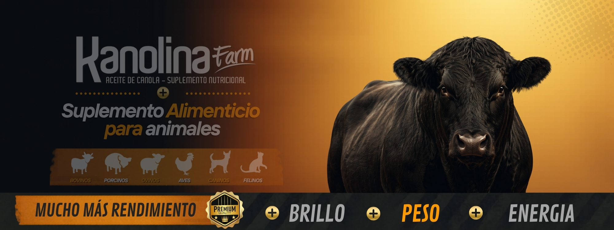

Más energía. Más fertilidad. Más resultados.
Potenciá la fertilidad y el rendimiento de tus toros.
Kanolina Farm es un suplemento 100% natural a base de aceite de canola prensado en frío, formulado para aumentar la eficiencia reproductiva, optimizar el metabolismo y mejorar el rendimiento en animales de alto valor productivo.
- No interfiere con la digestión ruminal
- 100% natural, sin químicos ni solventes
- Apto para sistemas intensivos y extensivos